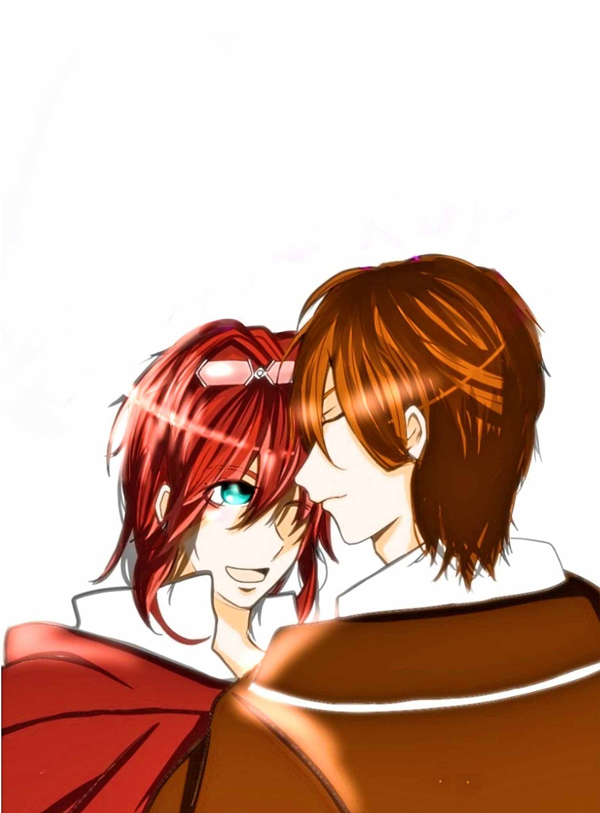
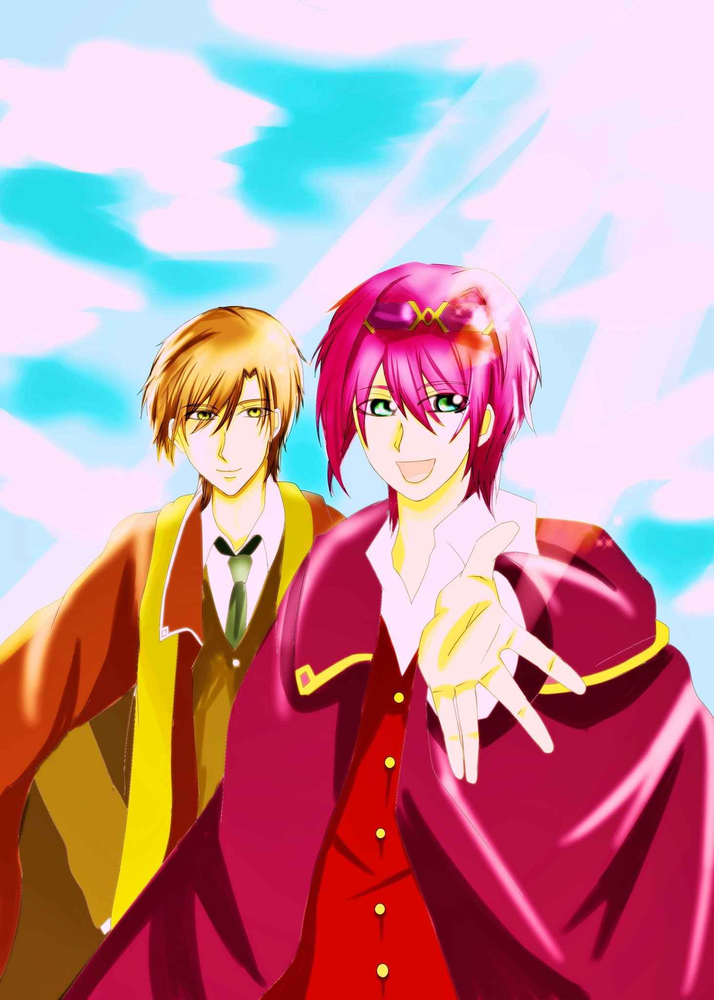

| Magic Ring オメガバース: 書き下ろし後日談あり (デジタル) | |
| 藍白 | |
| (2019) | |
Magic Ring オメガバース
文 藍白
絵 七賀ごふん
魔法。
一言で言えば、術を用いて超常的な力を操る技術。
「......出来た」
フィアは呟いた。手には今出来上がったばかりの魔法陣の描かれた紙がある。
ふふっと笑って、その紙を手にする。
「思った通りだ、いい感じ」
この魔法陣を描いたのはフィア。現在十八歳。この魔法陣を使った様々な魔法具を扱う研究所にフィアはいる。ここにフィアは住んでいる。
「これで何が出来るのかな」
呟くようにもう一度フィアは言った。
何度描いても上手くいかなかった今回の魔法陣は、とても繊細な造りになっている。なかなか上手く描けなかったが、これは、自分では上手く描けたかなと、ホッと胸を撫で下ろしていた時、ドアをノックする音が聞こえた。
「おい、出来たか」
「あ、は、はい。出来、出来ました」
急いで立ち上がると、くらりと目眩がした。徹夜明けの体には、ドアの開いた光は眩しい。勢いよく立ち上がったので、片目を手の平で覆い、もう片方で机に手を置き自身を支える。その間に先程声をかけてきた男が近づき、今しがた出来上がった魔法陣を手にした。
「ふうん」
「......どうですか」
「まあ、いいんじゃないの？」
「あ、あの」
「何？」
「......あ、いえ」
「じゃあ貰ってくな」
「あ、はい」
男はそう言うと、足早に立ち去って行った。残されたのは、いつものようにフィアひとり。
「......」
いつも誰かがフィアの魔法陣が出来上がった途端に現れ、今のように出来上がったばかりの魔法陣を持ち去っていく。
でもそれをどうこう言えるはずもなくって。
フィアは、この場所に恩がある。
身寄りがなく孤児院で過ごしていたフィアだったが、魔法陣を描くことが好きだった。今までずっと魔法陣ばかり描いてきた。これからもずっと描いていたいなと思っていた。
「......少し寝ようかなあ。お腹もすいたなあ」
フィアが取れる選択肢は少ない。
幼い頃、この魔法研究所の一室に住むことになった。孤児院で過ごしていた頃のフィアはずっとひとりで魔法陣を描いていた。それは拙いものだったが、孤児院を訪れていた研究所の者が、フィアの才能を見いだした。それ以降ずっとここにいる。
ずっと魔法陣を描いていられる。
フィアは、魔法陣を描くことが好きだ。だから満足していた。
「よし、寝よう」
そして今。真っ白な紙を見つめ、フィアは呟いた。
「......うん。また描けるから。次は何を描こうかなあ」
フィアはそう言うと、気を取り直そうと大きく伸びをした。欠伸をひとつした後、部屋の隅にあるベッドに潜り込んだ。
小さいとはいえ仮眠用のベッドもあるこの部屋は、フィア専用で使用できる。元々荷はあまりない。着替えがあれば生きていける。そんな今までだった。
「ふぁ......」
もう一度欠伸をすると、今度こそフィアは目を閉じた。
どのくらい眠っていたのか、ざわめきが聞こえた。ざわめきに起こされるように、フィアは目を開けた。
どうしたんだろう。
普段あまり部屋から出ることのないフィアは、外のことには疎かった。だが今日は騒がしい。
何かあったんだろうな。
でもそのまま、もう一度フィアは目を瞑った。何日か続けて徹夜をしていたので、とても眠い。襲い来る眠気に抗えず、どこか遠くの方でざわめきを聞きながら目を閉じた。
今日から新しい季節だ。
この魔法研究所は各地に存在する。その中でも上層部は移動があり、まさに今日がその日だった。
でもフィアは知らない。余計なことはフィアには知らされない。ただ魔法陣を描き続けることだけが、フィアに求められることだった。
フィアも余計な情報は欲しない。ただ魔法陣を描き続けられれば、それでよかったのだから。
フィアは眠っている。徹夜明けの体には、これ以上の体力が残されていなかった。すうすうと眠りながら、夢の中でも魔法陣を描く。
魔法が使えたら。
もしも魔法が使えたら。
きっとこの魔法陣を使って魔法を唱え、効力を己で確かめるだろう。
魔法に溢れているこの世界において、人々は魔法を使っている。それぞれ属性があり、使える魔法は人それぞれだ。
しかし稀にフィアのように魔法を扱えない者がいる。
「......ふぁ」
欠伸をひとつ。よく眠ったと大きく伸びをして、ゆっくりとベッドから起き出した。
ざわめきは聞こえない。ホッと息をすると、フィアはゆっくりと歩き出した。
「......お腹すいたなあ」
そう呟くと、何か食べるものはあったかなと、簡易キッチンを見に行った。
「何もないかあ」
買い出しにも行かずに数日ここに籠もっていたのだから当然だ。フィアは気後れしながらも、ゆっくりと部屋を出て行った。
大きな建物の魔法研究所。端の方にひっそりとフィアの部屋はある。そこからゆっくりと歩き出す。
「お、珍しいな、フィアちゃ～ん」
「引きこもりが出てきたのか」
前から男たちが歩いてきた。通りすがりに声をかけられる。しかしフィアは、そんな言葉は聞こえなかったふりをして、とにかく行こうと進んでいく。
「おい、無視するなよ」
「今回もいい出来だったってなあ」
背後から手を回されるように肩を組まれるも、あまりのなれなれしさに眉間にしわが寄る。
「今日はどうしたのさ」
「......」
「部屋にとじこもってばかりなのに珍しいな」
「......」
「ははっ、ああ、そうか。今朝の引き継ぎにも顔を出さなかったから呼び出しか」
彼らは、フィアの魔法陣をいいタイミングで現れ、持って行く人だ。何かにつけ声をかけてくるから厄介だ。更には、今朝の引き継ぎなどという話も聞いていない。
彼らが何かを喋っているが、遠くに気を紛らわす。真っ向から話をしてもわかり合えない人もいる。そう思いながら、組まれている腕をさりげなく離し歩き出す。
「まあせいぜい上手くやれよ。他に行くとこないんだろうしな。あはは」
「......」
どう返事をしても現状何も変わらないから、フィアは返答することを止めていた。そのまま進んで行く。
「他に行くところか......」
ないけど、ここは魔法陣だけを描いていられるから。
進んでいた足が止まった。フィアはひとつため息を吐くと、再び歩き出した。
食堂に着くと、まずはとカウンターに並ぶ。セルフサービスのこの食堂は、お手頃価格のものからいろいろなメニューがあり、時折フィアも利用している。
何食べようかな。
ぼんやりとメニューを見つめる。数日食事という食事はほとんど食べていなかったので、軽く済ませようと選んだ。
注文をし受け取ると、どこか空いている席はないかと見渡した。
「あそこに行こう」
ぽつりと呟くと、そのままゆっくりと進んでいく。
ちょうどその時、食堂の入り口からざわめきが聞こえてきた。
何だろう。
まあ僕には関係ないよね。
外の情報には疎いので、自分には関係ないと思いながら、空いていた席に座った。
「......え？」
席に座った瞬間、下腹が疼いた。
マズい、こんなところで。
こんなところで......発情したらマズいよ。
知った感覚に焦る。急いでここから立ち去らなければと焦るも、疼いて仕方がない。この発情を抑える術はフィアにはない。
「んん......っ！」
マズいマズいマズいっ。
ふわりと体が宙に浮いた瞬間、目眩がするような匂いに包まれた。
「んあっ」
目も開けられず、ざわめきも聞こえない空間に、ただその色濃く漂ってくる匂いに翻弄される。ゆらゆらと揺らめきながら運ばれていることを理解した。
「はっ......あ......っ」
無言で運ばれるも温かい。この温もりの正体に気付かないままに、運ばれて行く。
「ん......」
熱い......発情してる。
この匂いだ、知らない匂い。
誰の匂い？
「あ......え......？」
誰？
返事の代わりに、全身を包み込まれるような温かさを感じた。
知らないけれど知っている、そんな不思議な感覚に委ねる。意識は朦朧とし、何が何だかわからないから、余計に確かなものに縋る。
「......ん......ふ......」
口からは、声にならない声が、熱い呼気と共に漏れ出る。
「――」
「......ぇ......？」
フィアの耳元に、呼気と共に囁きが届くが、今のフィアにはわからない。
何......なんて言ったの？
何かを囁かれたのは理解したがわからない。でも狂わしいほどの匂いに、そして温かな温もりに翻弄される。
この発情の熱をどうにかして治めないとと焦る気持ちの中に、突風のようにそれが吹き込んでくるから縋る。
「――」
耳元に囁かれた声がその瞬間、もう一度何かを囁いた。腹に先程とは違う温かさが染みこんだ。
「――だよ」
「......はっ......あ」
その意味もわからないままに、フィアは自身の疼く下腹部を押さえた。
「......え？」
ずくんずくんと疼いていた下腹部の違和感が消えた。
「初めまして、かな」
「......え？ だ、れ？」
多分初めてだと思う。
誰？
そこには整った顔をした、自分よりは年上だろう男性の存在があった。
「ハリー。よろしく」
「よろしく？」
「さて、状況だけど」
「状況？ あ！」
先程のことを思い出し焦る。
「あ、僕！」
発情していたことを思い出す。下腹を撫で、ハッとしてハリーと名乗った男を見た。
「治まった？」
「え、ここ......あ」
キョロキョロと辺りを見回し、ここが医務室だと気づく。そしてハリーの顔を見た。
「フィアくん」
「え？」
「ローブの名前」
「あ」
魔法を扱う者は、皆ローブを着ている。扱える魔法や所属によって、その色や形は様々だ。そこに名前を刻んでいる。
フィアはハリーのローブを見た。
あ、この人、僕の上司だ。
所属と階級がわかり、自分の上司だと把握した。しかし何故そのハリーが今、自分を抱き上げているのか、そこがわからない。
「あの」
「ん？」
「あの、どうして」
ここに？
「番だから」
「......え？」
「番だから。君と俺」
「は？」
「ん？」
「え？」
「......」
薄ら笑みが浮かんだハリーの顔を、ぼんやりと見つめる。
な、にを、何をこの人は、言っているのだろうか。
「......えっと」
「番。わかる？」
「番は......わかり、ます」
「そう」
「......はい」
番のことはわかるが、だからどうなんだと言うことがわからない。
「もう苦しくない？」
覗き込まれるように聞かれ、フィアは思わず目を見開いた。
「は......あ、はい」
「そう、よかった」
「......あ、魔法」
「うん、魔法」
フィアは魔法は使えない。発情期が来ても、それを自分でどうこうは出来ない。
この世界は魔法で発情期をコントロールする。しかしフィアには出来ないから、誰かの手を借りなければならない。
「もしかして......あなたが......ありがとう、ございます」
「本当は......いや」
「？」
何か言いかけた？
でも、わかんないから、まあいいか。
何かを言いかけて、口ごもるように話を終えたハリーを、フィアは見つめた。
見たところ目の前の彼は、かなりの上層部ではなかろうかと思われた。
自分には縁のない存在。そう思った。
仕事のことは、フイアのすぐ上の上司から話がくるし、フイアの先輩に当たるものが話を持ってくる。常日頃からフィアが上層部の者と話をする機会などなかった。
だからこそ恐縮する。
ここに身を置いて十数年。正式に働き始めて一年。こんなにも近しい距離で上層部の者と、こんな風に空間を共にしたことはない。
「あ、僕なんかと、すみません。お礼は必ず」
そう言うとフイアは、抱かれているハリーの腕から抜け出そうとした。しかし、しっかり抱き込まれていて動けない。
「あ、のっ！」
「もう少し」
「あの、僕！ あ、用事、用事が」
「今すぐ？」
「そ、そうです！」
「終わったら、会えるかな」
「......な、んで？」
「番だから？」
「......えっと......お、わったら」
「うん」
意味はわからない。いや本当はなんとなくわかっている。でもこんな自分がと思うと素直になれなくて。
身なりから、恐らくは上級魔法を扱うのだろうと思った。でも自分には魔法は扱えない。辛うじて魔法陣を描くことは出来るが、描いた魔法陣がどのような効力を発するのか、実はフィア自身わかっていなかった。
だから引け目を感じる。魔法を扱えない自分が、上級魔法を扱う人の番になんてなれるはずはないのだと思い込んでしまう。
だから逃げる。拒絶し、なかったことにする。
どうせ今後は会う機会もないだろう。会っても番になる理由なんてないだろうと思った。
「......びっくり、した」
足早に医務室を立ち去り、廊下でひとつ息を吐き出すと、フィアは改めて行くべきところへ向かって行った。その後ろ姿を見つめられていることなんて気付かないままに。
この世界には、男女という第一性の他に、アルファ、ベータ、オメガという第二性が存在する。
アルファとオメガは番になれるが、ベータはならない。アルファとオメガの間にのみ存在する特別な繋がり、それが番だ。
「番かあ......」
番には、発情している時にアルファがオメガのうなじを噛めば成立する。ベータがオメガのうなじを噛んでも成立しないし、逆にアルファがベータのうなじを噛んでも番は成立しない。
「......ううん、気のせい、気のせい」
僕は今まで通りでいい。
好きな魔法陣を、ずっと描いていられればそれでいい。
文字通り狭い世界で生きてきたフィアにとって、アルファという存在は広い世界だった。そのアルファが今、自分の小さな世界に触れている。小さな世界が開かれたら、この小ささはなくなってしまう。
「......うん、気のせいだよ」
だからこの小さな世界を守りたい。フィアの描く小さな魔法陣のように。
どんなに頼まれても、この手で掴める大きさの魔法陣しか、フィアは描いたことはなかった。
小さな世界の小さな魔法陣。それがフィアだった。
歩きながらお腹がすいたことに気付くと、こんな時にまでと苦笑した。腹をさすりながら、フィアは歩いて行った。
「おい！」
廊下を歩いていたフィアは、突然目の前に現れた男性に驚いた。
「え？」
「え、じゃないよ、フィア！ 全く今回もとんでもない魔法陣を描いたな！」
「え？」
「こんな大きな作用があるのなら先に言えよ」
「......ごめんなさい」
だってわかんないんだもん。
この魔法陣がどんな風に使われるのか、聞いても教えてくれないし、自分でもわかんないし。
でも度々言われるこの言葉には、どんどん自信はなくなっていく。元々少ない自信だ。それが削られれば描けなくなってしまう。だから気付かないふりをしていた。
「......もう」
魔法陣は描きません。
でもその一言が言えなくって。魔法陣を描くことを止めれば、フィアには何もなくなってしまう。
「はあっ......ったくよお。気をつけろよ。お前は小さな魔法陣でいいんだよ」
「今の話は？」
「......え？」
背後から聞こえた声に、思わず振り返るフィア。そこにはつい先程まで一緒にいたハリーが立っていた。
「え？ なんでこんなところにハリー様が？」
「今の話は？」
「え、あ......その......いや、こいつが、いや、この者の描いた魔法陣が、その......」
急にもごもごと口ごもりだす男に、ハリーは眉間にしわを寄せながら近づいていく。
「君」
「ああ、あ、そうだ、フィア、気にするな。今後も励めよ。じゃあな」
「え？」
突然の話に戸惑うフィア。
「......えっと」
呟くフィアに、そばに来たハリーが答えた。
気まずい。今の会話を出会ったばかりの上司に聞かれたのかと思うと居たたまれない。
「......聞いてる。だから今日、来て貰おうかなと思ったんだけど」
「え？ どういう」
「来て」
「へえ？」
手を繋がれ進み出すと、フィアは慌てて着いていった。
「見て」
「あ、はい。あの、ここは」
着いたところは、今まで立ち入ったことなどない上層部の部屋。
「ああ、俺の部屋」
「俺の部屋？」
「何か問題でも？」
「あ、っと、いえ、大丈夫です」
先程のことも思い出され目を彷徨わせるも、差し出された紙に目を奪われる。
ミミズだ。
わかんない。
差し出された紙には、何やらぎっしりと文字が書き込まれているようだ。
「今回の魔法陣の詳細」
「はい」
わかんないよ。
眉間にしわを寄せながらフィアは答える。
「......」
「......なんですか？」
「この内容なんだけど」
「はい」
じっと目をこらしてもわからない。フィアにはミミズの這ったような形にしか見えないのだから。文字がわからないから図形にする。だから魔法陣。
フィアの伝えたい思いが魔法陣に込められている。
「そしてこの魔法陣」
差し出された紙の後にあった、フィアの描いた魔法陣を見せるハリー。
「わかる？」
「......」
わからないから答えられない。ハリーの真っ直ぐに自分を見つめる目には、ごまかしは出てこない。
「効力が大きすぎてね、浄化され過ぎちゃうんだって」
「......え？」
「フィアの癒やしの魔法はね、癒し過ぎちゃうんだって」
「は？」
「知らなかった？ フィアの癒やしの魔法の効果」
「まほ、う？」
「そう」
そういうとハリーは、目の前のデスクに二枚の紙を置き、フィアを抱き上げ椅子に座った。
「この魔法陣はね、威力が大きい時と小さい時が不安定。でも使用してみないと効力はわからない不安定なもの」
「......」
そうだったんだ。
もしかして、今まで渡されていた紙にも、そういうことが書いてあったのかなあ。
「この魔法陣はね、フィアの魔法が込められてる」
「......僕に魔法は使えないですけど」
申し訳ないが今の言葉は違うと、フィアはおずおずと訂正する。それにはハリーは柔らかい笑みを浮かべるから、思わずフィアの心臓はドキッと跳ねてしまう。
「魔法陣はね、フィアの魔法が詰まってる。ほら」
そう言うとハリーは、フィアの描いた魔法陣の紙を手にすると手の平をかざした。浮かび上がる紋様に目を奪われたまま、フィアは動けなかった。
今まで描いてきたものが、このように目の前で姿を現すなんてことはなかった。生まれて初めて、自分の描いた魔法を目にするフィア。心は生まれたばかりの赤子のよう。
「すごい......」
「初めて見た？」
「はい」
「自分で試したりは？」
「......ないです。わかんないから」
「教えようか？」
「教えて、くれるんですか？」
「勿論」
「ほんとに？ あ、でも僕文字が、あっ」
「文字が？」
「あ、いえ」
「文字が？」
「あ......えっと」
しまった、つい口が滑っちゃった。
字の読み書きが出来ないなんてバレたら、この仕事がなくなっちゃう。
字の読み書きが出来ない魔法陣職人の話なんて聞いたことはない。だからフィアは焦り慌てる。
「フィア」
「......字、が」
でも、こんなに真っ直ぐに見つめられると、慌てる気も失せていく。正直に伝えようと思った。
「......読めないんです」
「そう」
「......書けなくて、だから、その」
「じゃあ勉強しようか」
「え、あの......文字が......その」
好意は嬉しいが、そもそも文字を文字として理解出来ないから、例え教えてもらってもわからないだろうと思った。でも、この目が優しいから、つい喋ってしまう。
こんなにまで自分の話を聞いてくれた人はいただろうか。そう思うと、ぽろぽろと心の声が漏れ出てしまう。
抱き上げられた温もりが優しくて。静かに聞いているハリーの目が優しいから。そして、文字を知らないという自分の言葉を信じてくれるから。
「そういうこと」
「......はい。でも僕、この仕事続けたいんです」
「うん、それは大丈夫。俺がこれからフォローするし」
「なん、で？」
「番だから？」
「それは」
申し訳ない。
だから一瞬舞い上がってしまった心を静める。
「それは......だい、じょうぶ、です」
「どうして？」
「申し訳な、あっ......んっ」
「......」
ふいに重なった唇の感触に、フィアは固まった。
え？
な、に――？
「ん、んっ」
「......好きだよ」
「んはっ、え？ あ、え？」
「好きだよ」
それは初めてフィアを見かけた日のこと。正確にはフィアの描いた魔法陣を見たときのこと。
とても優しいオーラをまとった、癒やしの魔法陣に出会ったとき、ハリーの心は高揚した。一刻も早くこの魔法陣を描いた人に出会いたいと思った。
ハリーの住む場所に、偶然にもフィアの描いた魔法陣があった。それに触れた時、ここへの移動を申し出た。
それが今年叶った。叶ったら一刻も早く出会いたい。それが今。
話をして、あの魔法陣を描いたのは確かに、今自分の腕の中にいる人だと確信した。あの魔法陣と同じ優しいオーラをまとっている。
「あ、の、いや、それは、違う、と、思い、ます、けど」
「間違いないよ」
だからもう一度唇を重ねた。初めは戸惑っていたフィアだったが、次第に甘い匂いを醸し出す。
「ん、ふ......」
「番だよ」
「んん......」
「番」
フィアにも届いていた。この柔らかな、お日様のような温かい匂いが。ひなたぼっこをしているときのように温かい匂い。
ああ、そっかあ。
この人だ。
気付いてた、ほんとは。
でも認められなくて......自分が恥ずかしくって。
でも、僕はこの人に一目惚れしたんだ。
だから後は自分の思いに従うだけ。こんな自分が番だという、ほんの少しの抵抗が心の中に残っている。しかしそれは、お日様の匂いにかき消されていく。
「あっ」
ローブを脱がされ、シャツの間に手を滑り込まれ感じる人肌に、ぞくりと快感が走った。
「恥ずかし......っ」
「見せて」
耳元で囁かれ、背筋に痺れが走った。ぶるっと身を震わせると、その間に身にまとっていたものはなくなっていて。素肌に走る温もりに感じ入る。
「ん、ん、んっ」
「......」
耳朶を食まれ舐られる。ぴちゃりと唾液の音が響き、それにも悶える。そのまま舌が首筋を這いうなじに口づけられ吸われる。一瞬、ちりっとした痛みが走った。
「噛むよ」
「や、まだっ」
「いつならいいの？」
「んうっ」
アルファがオメガのうなじを噛めば番だ。
そのうなじに、もう一度吸い付かれ痛みを感じる間に、起立した性器を扱かれる。他人の手で与えられる初めての感覚に、またも悶える。
「んううっ、やあっ、あっ、あ、ああ――」
「......」
耳元で、ふっと笑む息づかいが感じられた。
あ、お日様だ。
ハリーの醸し出される匂いに意識を奪われ、与えられる快感に身を震わせると、あっという間に達した。
「あっ......はっ......あ」
気付けば双丘からは、しとしととオメガ特有の粘液が漏れ出ている。そこに長い指が触れ挿入されると、どうしようもない程の快感が襲ってくる。ちゅぷちゅぷと音が聞こえてくる。これが自分の体から出されていると思うと羞恥に悶える。でも与えられる快感が、段々深くなってくるから困ってしまう。
「ひあっ、そ、こっ。やあっ」
また耳元で笑む息づかいが感じられる。肩をすくめ快感に耐えるも、勝手に腰が揺れてくる。与えられるだけではなく、次第に自身からも快感を拾いに行ってしまう。
「だめだめぇ」
いやいやと首を振っても揺れて快感を拾うから、どんどん溺れていく。そして引き抜かれる指の感覚にも震える。同時に与えられる寂しさ。
「あ」
「うん」
あっと言う間もなく、ハリーの逞しい自身を宛がわれ挿入される。
「んあっ――あ――あ、あ、あ――......」
「力抜いて」
初めての蕾は、その逞しさに震える。前を扱かれ、フィアがそれに気を遣ると、ハリーはゆっくりと進んでいく。
「あっ、ん、んんぅ、ぁ、ああっ」
奥に届き、その衝撃に震えると、ハリーのしなやかな手が、フィアの髪を撫でた。ふわりとお日様の匂いがした。
ああ、そっかあ。
このままでいいんだ。
ひなたぼっこの温もりに包まれているようで、フィアの心は凪いでいく。だから手を伸ばした。伸ばした手をハリーの首筋に絡める。
「ん」
それが合図かのように、ハリーの抽送がフィアの内壁を擦っていった。
「あんっ、あっ、あ、あ、あ」
擦られ突き上げられる快感に次第に蕩けていく。ふいに目が合った。ハリーの顔が優しくて、だから温かくって。
番――。
そう心に思った。思ってもいいんだと感じた。だから絡めた手に力を込める。
番に――。
「いい？」
はっはっと荒い息づかいに、ああ、ハリーも感じているんだと思うと、何かが込み上げてくるようで胸が苦しくなった。
「あっ、あ、あ、いいっ、ひっ」
「噛むよ」
「ああああ――......ああっ」
うなじに熱さを感じた。痛みと共に与えられた熱に番だという喜びが込み上げてくる。そして最奥に放たれた熱い感覚に泣きそうになった。
捨てられ、行き場のない自分の行くべき場所。そう思った。だから絡めた手を離さぬように、しっかりとフィアはハリーに抱きついた。
「......一緒に」
「はっはっ......い、っしょ、に？」
「そう」
「はっ......あっ......う、ん」
小さな魔法陣だ。フィアの世界は小さな魔法陣で出来ている。
でもその魔法陣に色が加えられたら。それを恐れていたフィアだったが、脳内に浮かんだ魔法陣には、色が付いていた。今まで白黒だった魔法陣に色が添えられた。
あ、きれいだ。
これが番なんだと思った。自分が変わるのではなく、そのままに添えられる。
「この」
「ん？」
「ううん」
今じゃなくってもいいかな。
後で描いてみよう。
描いて色を添えて。
その魔法陣の効力を聞いて、文字にして貰って、そして――。
この先を想像すると、なんだか嬉しくて、勝手に涙が溢れてきて止まらない。だから、そんなフィアを見てハリーが慌てる。
教えてもらおう。
きっと教えてくれる。
ぽかぽか温かいお日様の匂いの中で、フィアの魔法陣に色が付く。
END
書き下ろし後日談
お日様の匂いだ。
いい天気。
大きく伸びをして目を覚ます。
「えっと、ここって......」
目覚めてすぐの、自分の部屋ではない状況に暫し困惑する。
「あ......そっか」
ハリーの存在を思い出す。うなじの噛み跡が、鈍い痛みが、フィアに昨夜のことを思い出させてくれる。
ほかほかと温かな胸を抱きながら、ゆっくりとフィアは立ち上がった。もう一度大きく伸びをして笑う。
「うん、今日もいい天気」
窓から見える空を眺めていると、ふと脳裏に紋様が浮かんでくる。
お日様の魔法陣だ。
きょろきょろと辺りを見渡すと、自分の荷物に気付いた。そこから紙切れを取り出すと、早速魔法陣を描き出してみる。
「うん、ここはもっと広くして」
思ったことを呟きながら、脳裏に浮かんだものを描いていく。今は色のない魔法陣だが、描いているうちに色づいてくるから不思議だ。自然と笑みが浮かんでくる。
床に蹲るように、一心不乱に描いているフィアは、端から見れば滑稽だろう。でもそんなことを気にする必要もないし、ここはハリーの部屋だ。誰にも邪魔はされないだろう。
どのくらいそうしていたのか。
「フィア」
声が聞こえた。頭上から、心に染みてくるような声が聞こえるが、振り向く時間が惜しい。
「......」
返事をする時間も惜しくって、とにかく手を動かした。そんなフィアの背後に、声の主が腰を下ろした。それをどこかで感じながらも、紙切れに書き続けていた。
「......出来た」
床に置いていた紙切れを持ち、窓からの夕焼けに照らす。
「ほう、見事なものだな」
「ひゃっ、あ、え？ い、つから？」
驚き、肩を跳ねさせて、フィアは振り向いた。背後に座り込んでいたのはハリー。
「すごいな、これは見事だね。この魔法陣の意味は？」
「え？」
「知ってる？」
「知らない......」
どういう魔法を込めた魔法陣にしたいかとか、そんなの考えたことはないし。
どの紋様を書き込めば、どの魔法の効力になるのかとか、勉強したくても――。
「この辺は」
「え？」
「教えるから覚えてみてよ」
「......うん」
魔法陣の紋様の意味合い。
紋様により効力があり、また作用する効果も変わってくる。そこにフィア独自の感性が込められ、フィアの独特の魔法陣を完成させている。
文字を知らないから勉強の機会を失っていた。それを誰かに伝えられる状況ではなかったし、フィア自身も、その状況をどうにかしようとする気持ちは諦めていたから。
でも、今教えてくれる現実に、心が温かくなる。さらさらとノートに書かれたハリーの文字をのぞき込む。でもやはりわからない。
「......わかんない」
「そう。じゃあ、これ、使ってみて。文字の下にこれを当ててみて」
ノートの上に書かれた横文字の下に当てられた一本の細長い棒。その棒から、ほんのりと淡い緑の光が発せられ、棒の上にある文字がわかるような気がした。心なしか、いつも見る文字よりも大きさも違うようだし、字体もすっきり見えた。
「今までの文字が見えづらかったのかもしれないね。この感じはどうかな」
「......意味はわかんないけど、見えるきがする」
「そう、よかった。じゃあ、それならまずは文字の勉強からかな」
微笑むハリーに、少し困った顔でフィアは尋ねる。
「......面倒臭くない？」
「どうして？」
「......」
「今まで知らなかったことを知っていく。それが俺と一緒だって思うと嬉しいものだよ」
「そう......？」
「さ、やってみよう？」
「うん」
手ほどきしながら、フィアに文字を伝えていく。必死にそれを知ろうとするフィアがかわいらしい。
詳細を聞いたし、調べていた。フィアの今までを思い、これからを考えた。
「フィア、これからもっと世界が広がるよ」
「え？ どういう意味？」
ハリーは微笑んだ。その表情を見て、フィアも、つられるように笑っていた。
知らなかったことを知り、それを生かしてこれからを生きていく。その横に自分がいる。支えてそれから支えられて。その未来を思いハリーは微笑んでいた。
「この魔法陣の魔法、使ってみようか」
「大丈夫なの？」
「見てて」
魔法陣を窓の空に向け、何やら詠唱を始めるハリー。すると掲げられた魔法陣から、七色の光が発せられた。
「あっ」
そう声がフィアの口から飛び出すと同時に、魔法陣から光の粒が、空へと舞い上がった。その光の粒は大きく広がり、キラキラと舞い踊る。
「きれい......」
「綺麗だね」
それはフィアの心だよ。
そうハリーは、心の中で呟いた。魔法陣は、心の姿を現すという。この綺麗な魔法陣を描く人物に会いたいと思った。それが現実となり、そして今、目の前に番としてここにいる。
「綺麗だよ」
「うん」
フィアが綺麗なんだよと、額に口づけを贈りながら、ハリーは呟いた。その呟きを聞き、フィアは笑った。
フィアの魔法陣。そしてフィアの魔法。フィアが魔法陣から魔法を使えるようになる日も、そう遠い未来ではないだろう。
魔法を使うフィアの横にはハリーがいる。その未来がきっと現実になる。
END

あとがき
ここまでお読み下さってありがとうございます。フジョッシーさんのコンテストに参加したお話に、後日談を書き下ろして掲載しました。お楽しみ頂けていれば幸いです。
魔法が好きです。そしてファンタジー。
そこに、LDをテーマに絡めてみました。
ほんの少しのきっかけや手立てで見えてくるものがある。その話を聞いて、このテーマを入れて書こうと思いました。その表現が上手く表せているといいなと思います。
たくさんの困りがある現状で、その困りが、少しでも楽になって生きやすくなったらいいなと思い、どのお話も書いています。表現力や文章力を磨いて、その思いが伝わるといいなと思い、後書きとして記そうと思いました。
かわいいイラストは、ごふんさんに描いて頂きました。魔法陣がこだわりだったので、素敵に表現して下さってありがとうございます。
また、いろいろなテーマでお話を書いていきたいなと思います。
お読み頂きありがとうございました。
藍白 ツイッター @aishiro_o
ha_ku_ha_ku_39_39@yahoo.co.jp
